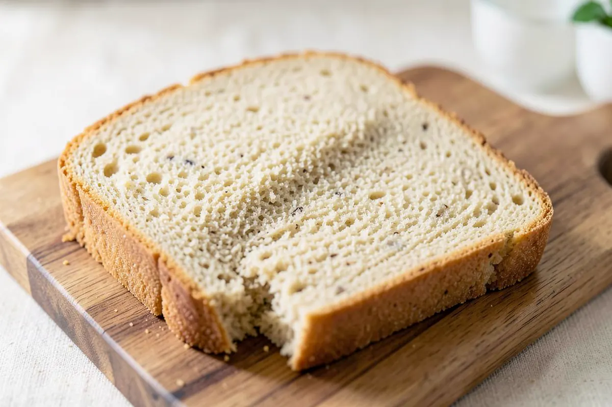

Banana Bread

Banana bread is forgiving in a way few baking projects are. The batter comes together in one bowl with a whisk and a spatula, there is no creaming of butter and sugar, and the result is a moist loaf that keeps for days.
The only real requirement is ripe fruit. Bananas with brown speckles and soft flesh carry far more sweetness and banana flavour than yellow ones, so if you have a bunch going past its best, this is where it belongs.
Ingredients
- 3 very ripe bananas, mashed
- 1/3 cup melted butter
- 3/4 cup granulated sugar
- 1 large egg, beaten
- 1 tsp vanilla extract
- 1 tsp baking soda
- Pinch of salt
- 1/2 tsp ground cinnamon
- 1 1/2 cups all-purpose flour
Instructions
- Preheat the oven to 350°F (175°C) and grease a 9x5 inch loaf pan.
- In a large bowl, mash the bananas well with a fork, then stir in the melted butter.
- Mix in the sugar, beaten egg, and vanilla extract.
- Sprinkle the baking soda, salt, and cinnamon over the mixture and stir in.
- Add the flour and mix just until no dry streaks remain — do not overmix.
- Pour the batter into the prepared loaf pan and bake for 55-60 minutes, until a toothpick inserted in the center comes out clean.
- Cool in the pan for 10 minutes, then transfer to a wire rack to cool completely before slicing.
Why this recipe works
Melted butter rather than softened butter keeps the loaf tender without air being beaten in, which suits a quick bread that should slice cleanly. A small amount of cinnamon rounds out the banana without turning it into a spice cake, and a pinch of salt keeps the sweetness in check.
Tips for success
- Mash the bananas with a fork until mostly smooth, leaving a few lumps for texture.
- Stir the flour in gently and stop as soon as the dry streaks disappear. Overmixing develops gluten and makes the loaf tough.
- Check the loaf at 50 minutes. A toothpick in the centre should come out with a few moist crumbs, not wet batter.
Substitutions that work
- Brown sugar can replace up to half the granulated sugar for a deeper, more caramel flavour.
- Melted coconut oil works in place of butter, though the loaf will be slightly less rich.
- Add half a cup of toasted walnuts or chocolate chips if you like, folding them in with the flour.
Storage and make-ahead
Wrap the cooled loaf tightly and keep it at room temperature for three days, or refrigerate for a week. Slices freeze well for two months; thaw them at room temperature or toast from frozen. The loaf actually improves on the second day as the crumb settles.
Serving suggestions
Serve it thickly sliced and lightly toasted with salted butter, or plain with coffee. It also makes a good base for French toast if the loaf is a few days old and slightly dry.
Frequently asked questions
How ripe should bananas be for banana bread?
Very ripe, ideally with brown spots and soft flesh. Underripe bananas give a pale, bland loaf, and the darker the peel, the sweeter the bread.
Why did my banana bread turn out dense?
Usually the batter was mixed too long or the bananas were too small. Mash the fruit well, fold the flour in gently, and use three medium bananas rather than two large ones.
Can I freeze banana bread?
Yes. Wrap slices or the whole cooled loaf tightly and freeze for up to two months, then thaw at room temperature or toast individual slices.